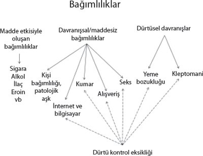

Artık yeni bir çağdayız. Artık yeni bağımlılıklarımız var. Bir önceki çağda başlayan telefonla "konuşmak" artık cep telefonuyla konuşmaya döndü. SMS mesaj göndermek, cep telefonu bağımlılığımıza eklendi. İnternet ve bilgisayarın yanında oyun bağımlılığı artık Playstation, X Box vb. haline geldi. İpod, "walkman"in tahtına oturdu!
Ama herhalde hayatı en çok etkileyen ve değiştiren ise internet ve bilgisayar düşkünlüğümüz oldu. Aslında internet ve bilgisayar birer araç. O araçlarla biz başka şeylere bağımlılıklar yaşıyoruz. İnterneti ve bilgisayarı kullanarak nelere bağlanıyoruz?
• Pornografi
• Oyunlar
• Kumar
• Web sörfü
• Chat odaları
• Borsa
• Alışveriş
İnternet ve bilgisayar bağımlılığını tanımlamak, kavramsal bir tartışma olarak süregelmektedir. Üstünde hemfikir olunmuş bir kavram da değildir. Sorun ortadadır ama adı konamamıştır diyebiliriz. Bu bölümde adını koymaya ve internet bağımlılığını tanımlamaya çalışacağım.
İnternet bağımlılarının saptanmasında sadece internet başında geçirilen sürenin azlığı veya çokluğu yeterli olmamakta, bu sürenin hangi kullanım amacı için harcandığı da belirleyici olmaktadır. İnternet kullanımında oluşabilecek olumlu ve olumsuz sonuçlar, interneti kullanım neden ve amaçlarıyla ilişkilidir. İnterneti kullanım süresi, interneti oyun, sohbet, eğitim, bilgi vb. kullanım amaçlarıyla değişebilmektedir.
İnternet Bağımlılığı Nedir?
İnternet bağımlılığının standardize edilmiş bir tanımı yoktur. Bazı araştırmacılar "bağımlılık" teriminin sadece kimyasal madde bağımlıları için kullanılması gerektiğini iddia etse de, benzer tanı kriterleri kumar bağımlılığı gibi başka sorunlu davranışları tanımlamak için de kullanılmıştır.
Bağımlılık terimi popüler kullanımda herhangi bir madde veya eylemle ilişkilendirilebilir. İnsanların yemeğe, sigaraya, kumar oynamaya, alışverişe, işe, oyuna, sekse "bağımlı" olabilecekleri söylenir. İnternet kişinin teknoloji veya bilime olan ilgisinden bağımsız olarak, hemen hemen herkesin kötüye kullanabileceği bir alan sağlamaktadır. İnternet bağımlılığı aynı zamanda bir çeşit teknoloji bağımlılığıdır ve bu da davranışsal bağımlılıkların altında yer alır (patolojik kumar oynama gibi).
Çok fazla terim internet kullanımıyla ilgili yaşanan sorunları açıklamaya çalışmaktadır. Ancak internet kullanımının düzeyi düşükten yükseğe doğru aşamalar içerir. Aşamalar aşağıdaki biçimde bir yol izleyebilir:
1. İnternetin ihtiyaç için kullanımı: Bu aşamada kişi sadece gerektiği ve zorunlu durumlarda interneti kullanmaktadır.
2. Sık ve düzenli internet kullanımı: İnternet bir eğlence aracıdır. Boş zamanlar internet aracılığıyla değerlendirilmektedir.
3. Sorunlu internet kullanımı: Bu aşamada internet kullanımı kişinin hayatında sorunlar yaratmaktadır. İnternet kötüye kullanımı terimi de burada değerlendirilebilir. Ancak bağımlılık düzeyinde değildir.
4. İnternet bağımlılığı: Patolojik internet kullanımı, kompülsif internet kullanımı, siber bağımlılık gibi terimler de bu kapsamda yer almaktadır.
Psikiyatrinin sınıflandırma kitabı DSM IV'te yer alan herhangi bir maddeye bağlı olmayan patolojik kumar oynama kriterlerinin internet bağımlılığı için adapte edilmiş hali aslında internet bağımlılığını daha iyi tanımlamaktadır. Buna göre internet bağımlılığı için aşağıdaki 8 ölçütten 5 tanesinin var olması gerekmektedir:
1. İnternetle ilgili aşırı zihinsel uğraş.
2. İnternete bağlı kalma süresinde artışa ihtiyaç duyma.
3. İnternet kullanımını azaltmaya yönelik başarısız girişimlerde bulunma.
4. İnternet kullanımının azaltılması durumunda yoksunluk belirtileri.
5. Başlangıçta olduğundan daha uzun süre internete bağlı kalma.
6. İnternetin aşırı kullanılması yüzünden ilişkiler, okul veya işle ilgili sorunlar yaşama.
7. İnternete bağlı kalabilmek için aile üyelerine, terapiste veya başkalarına yalan söyleme.
8. İnternete bağlı kalındığı süre içerisinde duygulanım değişikliği olması (umutsuzluk, suçluluk, anksiyete, depresyon gibi).
Bir kişiye internet bağımlısı demek için aşağıdaki belirtilerin çoğunluğunun olması gerekir:
• İnternet kullanmayı durdurmakta zorlanmak.
• Bırakmaya niyetlense de kullanmaya devam etmek.
• Başkaları tarafından interneti daha az kullanma konusunda uyarıların olması.
• Başkalarıyla vakit geçirmek yerine, internete bağlanmayı tercih etmek.
• İnternet yüzünden uykusuz kalmak.
• Çevrimiçi değilken bile internet hakkında düşünmek.
• İnternete bağlanma zamanını iple çekmek.
• İnterneti daha seyrek kullanmanın gerekliliğine inanmak.
• İnternette daha az vakit geçirmeye çabalama ve başaramamak.
• İnternete ulaşamayınca kendini rahatsız ve karamsar hissetmek.
• İnternet kullanımından kaynaklanan fiziksel rahatsızlıklar yaşamak.
• İnternete bağlanmak için işten eve gelmekte acele etmek.
• Günlük zorunlulukları internet yüzünden yerine getirememek.
• Gizli gizli internete bağlanmak.
• İnternette geçirilen zamanı başkalarından saklamak.
• Kendini mutsuz hissettiğinde internete bağlanmak.
• İnterneti üzüntülerden ve olumsuz düşüncelerden kaçmak için kullanmak.
Ancak bu belirtilerin varlığından öte en önemli etken psikososyal işlevlerin bozulup bozulmadığıdır. Tüm bu belirtiler olmasına rağmen kişinin hayatını, sorumluluklarını, yaşamsal fonksiyonlarını etkilemeyebilir. Örneğin aile hayatının devam etmesi, okul başarısı, arkadaş ilişkileri yerindeyse bu kişiye bağımlı demek zordur.
Fiziksel ile psikolojik bağımlılık arasında yapılan ayrım önemsizdir ve kesinlikle kullanışlı değildir. Bizler bütünsel canlılarız. Beyni olmayan bedenlerin veya tam tersi bedeni olmayan beyinlerin ortalıkta dolaştığını hiç gördünüz mü? Beden ile zihin arasındaki bu yapay ayrım bağımlılığın oluşum mekanizmalarını anlamak için çok az bir pratik geçerliliğe sahiptir, çünkü zihnimiz ile bedenimiz aslında bir bütündür ve birlikte çalışırlar.
Bedenimizin her bölgesini sinir sistemine bağlayan, endokrin sistemi de içine alan ayrı kimyasal yolaklar vardır. Kısaca, ne yapıyorsak, ne düşünüyorsak ve ne hissediyorsak oyuz. Her deneyimimiz psikolojik ve fiziksel sağlığımızı etkiler. O zaman sağlık, daha az elle tutulur olan manevi yönümüz de dahil, her parçamız arasındaki karşılıklı ilişkinin bütünleşmesi ve birlikte değer kazanmasıdır. Hastalık da, bu sağlıklı bütünleşmenin yokluğudur ve kişi kendini "rahatsız" hisseder. Bağımlılık, yaşamımızda bu uyumsuzluğun ifade edildiği bir belirti olabilir.
Kişi bir davranışa veya bir maddeye alıştığında (ya da tolerans kazandığında) ortaya çıkan psikolojik bağımlılık çok güçlüdür. Bu davranış etrafında güçlü ritüeller ve alışkanlıklar geliştirilebilir.
Kavramsal Tartışma
İnternet bağımlılığı diye bir kavram var mıdır? Yoksa bu durum yeni bir hastalık türü değil de, aynı kleptomani veya alışveriş bağımlılığı gibi bir "dürtü denetimi" sorunu mudur?
Birçok kişi için bağımlılık kavramı klasik anlamda alkol, esrar, kokain, eroin gibi kimyasal madde kullanımını içerir fakat kumar, seks, alışveriş, televizyon izleme, bilgisayar oyunları oynama gibi kimyasal olmayan davranışsal bağımlılıklar da söz konusudur. Davranışsal bağımlılıklar da tıpkı alkol ve uyuşturucu bağımlılıklarında olduğu gibi bağımlılığın belirtilerini gösterirler.
Psikiyatride temel olarak alınan ve DSM adı verilen hastalıkları sınıflandırma elkitabında tanımlanan bağımlılık ölçütleri sadece kimyasal maddeler için belirlendiğinden ve davranışsal bağımlılıkları içermediğinden, internet bağımlılığı henüz DSM'de bir hastalık olarak tanımlanmamaktadır. Kimyasal olmayan davranışsal bağımlılıklar DSM IV'te "dürtü kontrol bozuklukları" başlığı altında değerlendirilmektedir.
İnternet bağımlılığı kavramını ilk olarak 1995 yılında Dr. Goldberg ortaya atmıştır. Bu öyküye göre, Goldberg DSM'nin karmaşıklığını ve katılığını göstermek amacıyla "internet bağımlılığı bozukluğu" adını verdiği bir şey uydurur ve DSM IV'te yer alan madde bağımlılığı kriterlerini internet için uyarlayarak bu bozukluğun tanı kriterlerini oluşturur ve web sitesinde yayınlar.
Ancak Goldberg'i şaşırtan bir şey olur, kendilerini bağımlı olarak gören yüzlerce kişi siteye "netkolik" olduğunu itiraf eden mesajlar bırakır. Daha sonraları şaka gibi başlayan bu tartışmalar bilimsel alana taşınır (Arısoy, 2009).
Böyle bir hastalık olmadığını söyleyenlerin savlarından birisi, hastalığın var olduğu sonucuna varan araştırmalardaki yöntemsel sorunlardır. Örneğin, tanı kriterlerinin saptanmasında, patolojik kumar bağımlılığı gibi az sayıda insanda gözlemlenen, antisosyal bir davranış için geliştirilmiş kriterlerin, internet gibi milyonlarca insanın kullandığı ve doğası itibarıyla sosyal olan ilişki biçimine aktarılması eleştirilmektedir. Halbuki kumar da yaygın kitlesel bir sorundur. Sigara kullanımı da çok yaygın bir sorundur ve bir bağımlılıktır.
Bir başka görüş ise, internet bağımlılığı olanların çoğunun depresyon, anksiyete gibi başka bir sorunla yüzleşmek yerine kendilerini internete verdiklerini, çok az sayıda kullanıcının bir bağımlı olduğunu ileri sürmektedir.
Alkoliklerin önemli bir kısmı panik atak benzeri yakınmalardan kurtulmak için alkol kullanmaya başlarlar ve sonunda alkol bağımlısı haline gelirler. Bu durum onların alkol bağımlısı olmadıklarını göstermez. Hem alkol bağımlılığı, hem de panik atak sorunlarına eğilmek gerekir.
Sorunlu internet kullanıcıları genelde üç aşamadan geçmektedir (Ekinci, 2002):
1. Büyülenme
2. Saplantı
3. Hayal kırıklığına uğrama/uzak durma
İkinci aşamada saplanıp kalma oranı oldukça yüksektir. İkinci aşamadan üçüncü aşamaya geçmek her zaman mümkün değildir.
Bağımlılıkla İlgili Terimler
Alışkanlık mı, Bağımlılık mı?
Alışkanlık, günlük veya belli bir zaman aralığında rutin olarak yapılan eylemlerdir. Alışkanlık daha fazla rutin işler için kullanılan bir terimdir. Ayrıca alışkanlık terimi, yemeklerden önce ve sonra ellerin yıkanması, spor yapılması vb. olumlu davranışların yanında; gece geç saatlerde uyumak, düzensiz beslenmek gibi olumsuz davranış ve etkinlikleri de içerebilmektedir. Sigara, içki vb. madde kullanımları bağımlılığa dönüşmese de kötü veya olumsuz alışkanlıklar olarak değerlendirilebilir.
Günlük olarak evde, işte, okulda kullanılan internet, bu rutin işlerden sayılarak alışkanlık diye değerlendirilebilinir. Günlük girilen belirli sitelerin ve mail'lerin kontrol edilmesi de bu kapsamda görülebilir.
Bağımlılık, alışkanlığın bir sonraki safhasıdır. Bağımlılığın tam olarak oluşması, bağımlılık davranışının rutin ve aşırı ölçüde yapılmasıyla yakından ilişkilidir.
Terim Karmaşası
İnternet bağımlılığı terimi yanında aynı şeyi ifade etmek için birçok terim kullanılmaktadır. Henüz tam bir anlaşma yoktur. Örnek olarak aşağıdaki terimler verilebilir:
• Patolojik internet kullanımı
• Sorunlu internet kullanımı
• Aşırı internet kullanımı
• İnternet kötüye kullanımı
• İnternet kullanım bozukluğu
• Siber bağımlılık
• Kompülsif internet kullanımı
Sorunlu internet kullanımı kavramı, bireyin yaşamında internet kullanımından ötürü psikolojik, sosyolojik, okul ve iş yaşamıyla ilgili birtakım zorluklarla karşı karşıya kalmasını ifade etmektedir.
İnternet kötüye kullanımı kavramı; çevrimiçi sohbet, çevrimiçi oyun, çevrimiçi kumar, çevrimiçi alışveriş, pornografi ve çevrimiçi suç vb. etkinlikleri kapsamaktadır.
Aşırı internet kullanımı ile internet bağımlılığı da ayrılmaktadır. Aşırı internet kullanımı kavramında bireylerin normalden, alışılmıştan veya planladığından daha uzun süre internette kaldığı ifade edilmektedir.
Bir bireyin ödev veya iş amaçlı internette uzun süre kalması sorun teşkil etmeyebilmekte ve bağımlılığa neden olmayabilmektedir. Aşırı internet kullanımına sahip bir birey, internet bağımlılığının bütün belirti ve davranışlarını göstermeyebilir. Yani interneti aşırı kullanan her birey için bağımlılıktan söz edilmeyebilir.
Bunların yanında internet bağımlılığını tanımlayan başka terimler de kullanılmaktadır. Terim karmaşası burada da sürmektedir. Örneğin:
• Bilgisayar bağımlılığı
• Oyun bağımlılığı
• Sanal bağımlılık
• Net bağımlılığı
Yukarıdaki terimlerin hepsi aslında aynı şeyi tanımlamakla birlikte farklı ifade edilmektedir. Bu da aynı dili konuşmayı, araştırma yapmayı, anlaşmayı zorlaştırmaktadır.
Özgül ve Genel Tipte Sorunlu İnternet Kullanımı
"Gerçek" internet bağımlılığı vakalarını, hatalı araştırma veya popüler ürünlerden ayırt edebilmek için, "özgül" ve "genel" sorunlu internet kullanımı olmak üzere iki ayrı kategori tanımlanmıştır.
Özgül sorunlu internet kullanımı kategorisi internetin belli bir işlevine bağımlı olanları ifade eder. Klinik ve medyadaki kullanımıyla, bu kategori sanal seks bağımlılarını, çevrimiçi açık artırmalara katılanları, internette hisse alışverişi yapanları ve kumar oynayanları içerir. Bu bağımlılık biçimlerinin içeriğe özel olduğunu varsaymak makuldür ve internetin olmadığı durumlarda da varlıklarını sürdüreceklerdir. Özgül sorunlu internet kullanımı kategorisi, internetin sadece bir yönüne olan bağımlılığa işaret eder ve bu yön internetin diğer fonksiyonlarından bağımsızdır.
Genel sorunlu internet kullanımı kategorisi ise internetin yaygın, çok boyutlu kullanımına işaret eder. Açık bir amaç olmadan, internette zaman geçirmeyi de içerebilir. Genel sorunlu internet kullanımı sıklıkla çevrimiçi "sohbet"le veya e-mail bağımlılığıyla ilişkilidir. Bunların internetin sosyal yönüyle ilişkili olduğu söylenebilir. Sosyal bağ ihtiyacı ve bunun çevrimiçi ortamda pekiştirilmesi sanal sosyal yaşamda kalma arzusunun artmasıyla sonuçlanabilir.
Bağımlılık Belirtileri
Tolerans Gelişimi
Bütün bağımlılar internete belli süre bağlanmayla başlarlar yolculuklarına. Ancak bu süreyi kısa zamanda artırmak zorunda kalırlar. Çünkü istedikleri doygunluğa ulaşabilmeleri için süreyi uzatmaktan başka çareleri yoktur. Artık kullandıkları ilk süreyle bekledikleri etkiye ulaşamaz hale gelirler.
Belli sürelerde kullanılan internet aynı etkiyi göstermemeye başlar. Beklenen etki ortaya çıkmayınca rahatlama sağlanamaz. Beklenen etkinin azalmasına bağlı olarak, kişi çoğunlukla kullandığı süreyi artırmak gereksinimi duyar. Giderek internet başında geçirilen süre uzar.
Yoksunluk
Her tür bağımlılık yapan madde bir süre kullanıldıktan sonra bırakıldıkları zaman, yoksunluk belirtileri denilen birtakım rahatsızlıklar ortaya çıkar. Bunlar arasında rahatlayamama, sıkıntı, huzursuzluk, mutsuzluk, depresyon, hiçbir şeyden zevk almama, iştahsızlık sayılabilir. Bağımlıda belirgin bir sıkıntıya neden olur. Yoksunluk belirtileri, bağımlılığın şiddetine göre değişir.
İnternet bağımlılığı ile kaygı ve depresyon arasında anlamlı bir ilişki bulunduğu görülmektedir. Depresyon, internet bağımlılığında hem bir belirti hem de bir neden olarak rol alabilmektedir.
Başarısız Bırakma Girişimleri
Bağımlı olan kişi interneti birçok kez bırakma girişiminde bulunmasına rağmen tam olarak bırakamaz, tekrar kullanmaya başlar. Bırakır, tekrar başlar. Ondan tam olarak uzaklaşamaz. Bu kısırdöngü sürüp gider. Bırakma girişimlerinin süresi genelde kısadır.
Zarar Görmesine Rağmen Kullanmaya Devam Etme
Kişi, arkadaşlarıyla, ailesiyle ilişkilerinde zararlarını görmesine rağmen internet kullanmayı sürdürür. Toplumdan giderek uzaklaşır, okul veya iş başarısı düşer, hastalıklara yakalanır. Ancak tüm bunlara rağmen, bazı mazeretlere sığınır ve interneti kullanmaya devam eder.
Sosyal zararlarının yanında ekonomik zararlara uğramasına, başının yasalarla derde girmesine rağmen internet kullanımını bırakamaz ve devam eder. İnternet bağımlıları uykusuzluk, hareketsizlik nedeniyle kilo alabilmekte, düzensiz yeme alışkanlığına sahip olabilmektedir.
Tasarlandığından Fazla Kullanmak, Kontrol Edememek
Örneğin kişi "bu akşam iki saat internete gireceğim" diye oturur, ancak o gece yine saatlerce internet başında kalır. Kişinin internet kullanımı üstündeki kontrolü kalkmıştır. Bir anlamda kullandığı internet, kontrolü ele geçirmiştir.
Sorumluluklarını ve Yükümlülüklerini Yerine Getirememe
İnternet bağımlısı bireyler yemeği, uyumayı, okula gitmeyi unutmaktadır. Temel sorumluluklarını bilgisayarla aralarında bir engel gibi görebilmektedir. Bu sorumlulukları yerine getirmeyi erteleyebilmekte veya unutabilmektedirler.
İnternet bağımlıları işyerinde önemli günleri kaçırmaya, aileleriyle daha az vakit geçirmeye ve normal rutinlerinden yavaş yavaş uzaklaşmaya başlarlar. Arkadaşlarıyla sosyal bağlarını ve üye oldukları toplulukları ihmal ederler, yaşamları internet yüzünden idare edilemez bir hal alır.
Zaman Harcama
İnternet bağımlılığının en önemli belirtilerinden biri internet başında uzun yani aşırı zaman geçirmektir. İnternet bağımlığının en sık rastlanan etkilerinden biri, onun zaman algısında yarattığı bozulmadır. İnternet bağımlıları çevrimiçiyken bir çeşit yerine koyma yaşarlar ve zihinleri internetle aşırı meşgul olduğu için hayatlarındaki temel alanları bile idare etmekte başarısız kalabilirler.
İnternet kullanımının olumsuz etkisi veya bir bağımlılık türü olarak karşımıza çıkmasındaki temel nedenlerden biri de "kullanım süresi" ya da çevrimiçi olarak harcanan sürenin ölçüsüdür.
Bağımlı kullanıcıların haftalık veya günlük internet kullanım süreleri bağımlı olmayan kullanıcılardan büyük oranda fazladır. İnternet bağımlıları internet karşısında zaman kavramlarını yitirmekte, bazen bütün bir günün nasıl geçtiğini fark edememektedirler.
İnternet bağımlılığı ile interneti kullanım süreleri arasında doğru orantılı bir ilişki vardır. Bireylerin internette harcadıkları süre artıkça bireyde bağımlılığın oluşması veya bağımlılık düzeylerinin şiddetlenme ihtimali de artmaktadır.
Ne kadar süre internet başında kalmak, internet bağımlılığının bir göstergesi olarak değerlendirilebilir? İşte bu sorunun net bir cevabı yoktur. Araştırmalar haftalık 25 saatten 80 saate kadar değişkenlik göstermektedir. İnternet başında uzun zaman geçirmek tek başına, bağımlılıktan söz etmek için, yeterli değildir. Haftalık sürenin toplumdan topluma ve farklı yıllara göre değişebileceği söylenebilir. İnterneti yeni kullanmaya başlayan bir kişi ile uzun zamandır kullanan bir kişinin bağımlı olma ihtimali benzerdir. Yeni veya eski kullanıcı olmak, bağımlılık riskini etkilememektedir.
Sadece internet bağımlılığında değil aynı zamanda diğer cep telefonu veya televizyon gibi teknoloji bağımlılıklarında da teknolojiyi kullanım zamanı önemli bir belirti olarak karşımıza çıkmaktadır. Örneğin, televizyon bağımlılığıyla ilgili yapılan bir araştırmada bağımlı bireylerin haftada ortalama 55 saatlerini televizyon başında geçirdikleri saptanmıştır.
Psikososyal İşlevlerde Bozulma
Bağımlılık ilerledikçe, kullanıcılar, internetteki aktiviteler tarafından yönlendirilmeye başlarlar; çevrimiçi oyunları tercih eder, sanal arkadaşlarıyla sohbete dalar veya kumar oynarlar; internette yalnız kalabilmek için, giderek ailelerini ve arkadaşlarını görmezden gelirler.
Araştırmalarda internet kullanımında artışın yalnız kalmaya ve sosyal ilişkilerde azalmaya yol açabileceği gösterildi. Tartışmalı olsa da "insanlar internette ne kadar fazla zaman geçirirlerse, gerçek hayatta insanlarla o kadar az iletişim kurarlar" sonucuna varıldı. İnterneti haftada birkaç saat kullanan ailelerle yapılan bazı araştırmalarda bile sosyal destek ve mutlulukta azalma, depresyon ve yalnızlık düzeylerinde ise artma olduğu gözlendi. İnternet bağımlığıyla ilgili çalışmalarda sosyal yalıtılmışlığın kompülsif internet kullanımıyla doğrudan ilişkili olduğu gösterildi.
Sanal ilişki yaşayanların ve pornografi veya cinsellikle ilişkili sohbet odalarına bağımlı olanların cinsel davranışlarında da değişiklik saptanabilir. Çoğu durumda, kişinin gerçek yaşamdaki eşiyle olan cinsel yakınlığın yerini sanal ilişkiler almaya başlayabilir ve kişi zamanla tüm cinsel ihtiyacını karşılamak için bilgisayara yönelebilir.
İnternet Bağımlılığının Evreleri
Aşağıda yer alan evreler bütün bağımlılar için geçerli değildir. Farklı seyir izleyen durumlar da olabilir. Bu evreler bağımlılığın daha iyi anlaşılması için anlatılmıştır.
İnternet Kullanmayı Yoğunlaştırma
Bu evrede kişi genellikle "ben bağımlı olmam", "kontrol edebilirim", "bu son olacak" gibi yanlış inançlar taşır. Eğer internet bir sorunla başa çıkmak için kullanıldıysa, tekrar bir sorunla karşılaşıldığında farklı çözüm arayışlarına yönelmeden, öğrenilmiş bir davranış olarak internet kullanmaya devam eder.
İlerleme Evresi
Bu evrede kişi sık ve uzun süre internet kullanmaya başlamıştır. Çoğunlukla artık bağımlı hale gelmiştir. Süre artırımları, internet yüzünden yaşanan psikososyal sorunlar hep bu dönemde yaşanır. Genellikle kişi bağımlı olduğunun farkında değildir. İnternet kullanımının çeşitli zararlarını görmesine rağmen, bunları değerlendiremez. Yaşamının değiştiğinin farkındadır. Ancak bu konuda tümüyle bilgisayarı suçlamamaktadır. İnternet kullanımını kontrol edecek isteği, gücü ve inancı yoktur.
Bırakma Evresi
Yaşadığı zararlar üst düzeye çıkmıştır. Kişi artık kurtulma isteğindedir. Durumun kendisine verdiği zararın farkına varmıştır. Ancak halen ikili duygular içindedir (ambivalans). Bu evrede kişinin cesaretlendirilmesi gerekir.
Bırakmaya karar verdikten hemen sonra herhangi bir neden öne sürerek kişi bırakma girişiminden vazgeçebilir. Çünkü, bırakmak onu korkutur. Daha da önemlisi savaşmaya henüz hazır değildir. Bu evrede kişiyi bırakmaya zorlamak, bırakma girişiminin başarısızlıkla sonuçlanmasına neden olacaktır.
Tekrar Kullanmaya Başlama Evresi
İnternete karşı eski katı tutumu kalkmıştır. Yaşadığı olumsuzlukları unutmuştur. Tekrar kullanmaya başlamada "ara sıra kullanmaktan bir şey çıkmaz" düşüncesi temeldir. Kontrol etmek daha kolay olacağı için, bağımlının bu dönemde fark edilmesi büyük önem taşımaktadır.
Eskiye Dönme Evresi
İnternet yoğun biçimde tekrar kullanmaya başlanmıştır. Bağımlılığın tüm belirtileri ortaya çıkmıştır. Her şey sil baştan olmuştur.
Azı Karar Çoğu Zarar mı?
İnternet aktivitesinin kişinin gündelik hayatı üzerindeki etkileri bağımlılığı belirleyen önemli bir etkendir. Sağlık ve hijyen, iş hayatında başarı, arkadaşlarla ve aileyle kurulan doyurucu ilişkiler uyumlu bir yaşamın en önemli özellikleridir. Bu özelliklerden kaç tanesinin hangi ölçüde internet kullanımı nedeniyle kesintiye uğradığı/bozulduğu bize vakanın patolojik boyutlarını gösterir. Biz bunu bilimsel jargonda kişinin "psikososyal işlevlerinin bozulması" olarak tanımlıyoruz.
Artan depresyon, kızgınlık, yalnızlık, suçluluk, öfke duyguları patolojik internet kullanımının işaretleri olabilir. Kişi bu duyguları internet hayatıyla veya gerçek hayatıyla bağdaştırılabilir. Bunlar çoğunlukla kişinin ihtiyaçlarına yüzeysel olarak hitap eden internet aktivitelerinden kaynaklanır. Örneğin bir genç düşünün. Hafta içi her gün 3 ve hafta sonları ise 6 saat internette. Ama arkadaşları var, onlarla dışarıda görüşüyor, dersleri iyi durumda, aileyle bağlantısı devam ediyor, sporla vb. ilgileniyor. Bu gence bağımlı demek güçtür.
İnternet Bağımlılığı Yaygın Bir Sorun mu?
Avrupa'da 2007 yılında internet kullanımının yüzde 43,4 olduğu düşünülürken, 2007 yılının ilk yarısında Türkiye'de halkın yüzde 22,5'inin internete erişim olanağı bulunmaktadır. 2007 yılının tümü için ülkemiz nüfusunun dörtte birinin internet erişimi olduğu, yüzde 34,3'ünün son üç ay içinde bilgisayar kullandığı, yüzde 32,2'sinin ise internete girdiği Türkiye İstatistik Kurumu tarafından yapılan çalışmada ortaya çıkmıştır. İnternet kullanımında artış oranı 2000-2007 yılları arasında Avrupa genelinde yüzde 231 iken Türkiye'de yüzde 700'dür (TUİK, 2007; Yalçın, 2008).
Genel olarak internet bağımlılığının toplumdaki yaygınlığı yüzde 6-14 arasında saptanmıştır (Arısoy, 2009). Yapılan bazı çalışmalarda internet bağımlısı olarak nitelendirilebilecek kişilerin oranı toplam kullanıcıların yüzde 1,98'i ile yüzde 3,5'i arasında değişmektedir. Ayrıca internet bağımlılığı açısından risk altında olabileceği düşünülen kullanıcıların oranı ise yüzde 8,68 ile yüzde 18,4 arasında bulunmuştur. İtalya'da 16 yaş grubunda internet bağımlılığı tanısı alanların oranı yüzde 5,4'tür (Whang, 2003; Johannson, 2004; Pallanti, 2006).
2004 yılında İstanbul'da 2.209 ortaöğretim öğrencisi arasında yapılan bir araştırmada en az bir bağımlılık tanısı ölçütü karşılayanların yaygınlığı yüzde 46,1, iki ölçütü karşılayanların yaygınlığı yüzde 21,7 iken, üç ve dört ölçütü karşılayanların yaygınlığı sırasıyla yüzde 13,3 ve yüzde 7,9'dur. Bağımlılık tanısı için gerekli olan en az beş ölçütü karşılayanların yaygınlığı ise yüzde 4,5 olarak bulunmuştur (Cömert ve Ögel, 2009).
Bu araştırmada bağımlılık tanısı alanlar içinde en yaygın görülen ölçütler ise ilk dört ölçüt olan internette geçirilen zamanda artış, internette planladığından uzun süre geçirme, internette geçirilen süreyi kısaltmayı deneme ama başarılı olamama, hayatlarındaki kişilerin internette geçirdikleri süreden şikâyet etmeleridir.
Yine aynı araştırmada bağımlılık tanısı erkeklerde kızlara göre üç kat daha fazladır. Okuldan ve evden kaçanlarda bağımlı olma riski bu davranışları yapmayanlara göre iki kat daha yüksektir (Cömert ve Ögel, 2009).
Sağlıklı İnternet Kullanımı
Sorunlu internet kullanımı sıklıkla tartışılmış olsa da, sağlıklı internet kullanımı çok az tartışılmıştır. Böyle bir şey var mıdır? Tabii ki evet! Milyonlarca insan interneti bilgiye ulaşmak, arkadaşlarıyla iletişim kurmak, çalışmak, oyun oynamak için kullanmaktadır.
Sağlıklı internet kullanımı, bilişsel veya davranışsal rahatsızlıklar oluşmaksızın makul zaman dilimlerinde internetin kullanımıdır. Sağlıklı internet kullanıcısı için gerçek ve sanal yaşam birbirinden ayrılmaktadır. Ancak sağlıklı olmayan veya internetin yanlış kullanımları sonucunda oluşabilecek bağımlılıkta ya da bağımlılığın ileriki düzeylerinde gerçek ve sanal yaşam karıştırılabilmektedir.
İnternet olumsuz bir araç gibi nitelenmemeli ve kötülenmemelidir. Aksine, internet gündelik hayatımızın önemli bir tarafını oluşturmak yönünde evrimleşen etkili bir araçtır. Biz ise, aşırı kullanımın doğurabileceği olumsuz sonuçların farkında olmalı ve patolojik kullanımı olan insanların davranışlarını anlamaya çalışmalıyız.
Bu durumda, sağlıklı internet kullanımı nedir? Sağlıklı internet kullanımı, interneti belirli bir amaç için, makul süreler dahilinde bilişsel ve davranışsal rahatsızlık yaşamadan kullanmak demektir. Sağlıklı internet kullanıcıları internetteki iletişimi gerçek yaşamdaki iletişimden ayırırlar. İnterneti kimliklerinin kaynağı olarak görmek yerine, onlara yardımcı bir araç olarak görürler.
Belli bir zaman sınırı veya davranışsal bir çerçeve yoktur. Bu durumda sağlıklı internet kullanıcısı ile sorunlu internet kullanıcısı arasındaki sınırı nerede çizmeliyiz? Bir uçta sağlıklı kullanım, bir uçta ise sorunlu kullanım vardır. Her kişi bu spektrum içinde bir yerdedir. Belirlenmiş tek bir çizgi veya eşik değer yoktur.
Yüz yüze yaşantınız ile sanal yaşantınız koptuysa bir sorun vardır. Sağlıklı internet kullanımı ile bağımlılık arasındaki ince çizgi için aşağıdaki kriterler de önerilmektedir. Buna göre sağlıklı internet kullananların özellikleri şunlardır:
1. Yüz yüze yaşantınız sanal yaşantınızla bütünleşmişse.
2. İnternet üzerindeki hayatınızdan gerçek hayattaki aile ve arkadaşlarınıza söz ediyorsanız.
3. İnternet ortamındaki cemaatinize kendi gerçek kimliğiniz, ilgileriniz ve becerilerinizle katılıyorsanız.
4. İnternet üzerinde tanıştığınız insanlarla telefonla konuşuyor veya şahsen görüşüyorsanız.
5. Gerçek dünyadan tanıdığınız insanların bir kısmıyla da e-posta veya sohbet ortamlarında ilişkiye geçiyorsanız.
Bağımlılığın Doğası
İnternet ve bilgisayar bağımlılığı davranışsal bağımlılıklar kapsamında değerlendirilir. Sigara, alkol ve uyuşturucuya bağlı bağımlılıklara "maddeye bağlı bağımlılık" adını veriyoruz. Davranışsal yani maddesiz bağımlılıkları kişi bağımlılığı (örneğin aşk bağımlılığı), internet, bilgisayar, kumar, seks ve alışveriş bağımlılığı olarak ayırabiliriz.
Yeme bozukluğu bir dürtüsel davranış olup, bazı yeme bozukluklarının bağımlılık olup olmadığı tartışmalıdır. Kleptomani ise bir dürtüsel davranıştır ve bağımlılık olarak kabul edilmez. Ancak davranışsal yani maddesiz bağımlılıkların hepsinin dürtüsel davranışlardan kaynaklandığı söylenebilir. Davranışsal bağımlılıklarda dürtüselliğin yanında tekrarlayan davranışlar da söz konusudur. Kişi yapmasının doğru olmadığını bildiği halde, karşı koyamadığı bazı davranışları tekrarlar ki buna "kompülsiyon" adı verilir.
Dürtülere uymak ve kompülsiyonları yerine getirmek kişiye haz verir. Dürtülere karşı koymak ve kompülsiyonlara uymamak ise kişiye acı verir. İşte bazen insanlar bu acıdan kaçmak isterler. Aslında acıdan kaçmak da, kişiye bir haz verir. Acının yaşanmamış olması, dolaylı olsa da bir hazdır. İnternet ve bilgisayar bağımlılığı bir anlamda kişinin zorlanma karşısında bir kaçışıdır. Toplumsal ve gerçek yaşamla başa çıkmak yerine kaçmak kişiye haz verir. Öte yandan sanal dünyanın lideri olmak ise doğrudan bir haz nedenidir.
Bazen haz, yaşamdan önemli olabilir. Kişi yaşamak yerine hazzı seçebilir. Suç işlemek de haz verebilir. Bir yasağı delmek de haz verebilir. Hazzın ise bir bedeli vardır. Kişi bu bedeli ödediği sürece hazla yaşayabileceğine inanır.
Hazlar "time in" ve "time out" diye ikiye ayrılır. Toplumsal yaşamın kuralları içinde haz yaşanıyorsa buna "time in" denir. "Time out" ise toplumun kabul etmediği hazlardır. Örneğin bütün gününü bilgisayar başında geçiren kişiye kimse sorunlu internet kullanıcısı diye bakmaz. Ama bütün gün evde bilgisayar başında vakit geçiren ve çalışmayan kişi bir sorun olarak görülür.
Sonuç olarak kişi interneti bir haz olarak görür ve mantıksız da olsa bırakmak istemez. Ama son yıllarda yapılan çalışmalar sadece hazzın bağımlılıkta yeterli açıklayıcı mekanizma olmadığını göstermektedir.
Beynimizde hazdan amigdala adı verilen bölüm sorumludur. Prefrontal adı verilen ön beyin bölgesi ise arama davranışından sorumludur. Bağımlılık araştırmalarında amigdala artık haz üretmese bile insanların yine de bu davranışları sürdürdüğü gözlenmiştir. Çünkü prefrontal bölge devreye girmektedir. Kişi hoşlanmasa bile aramaya ve istemeye devam etmektedir.
Bir anlamda "istemek hoşlanmak değil"dir. Bu nedenle bağımlılara ceza bazen çalışmaz. Ceza verseniz bile o davranışı sürdürür. Çünkü cezadan kaçmak haz olsa bile, artık o kişide haz yani hoşlanmak primer olmaktan çıkmış, istemek hâkimiyet kurmuştur. Kişinin davranışını sürdürmesinin mantıklı bir açıklaması yoktur artık!

İnternet ve bilgisayar bağımlılığında diğer bağımlılıklar gibi tutulmayan sözler ön plandadır. Bugün bırakacaktır, bir daha oynamayacaktır, son kez bilgisayara giriyordur, artık derslerine bakacaktır, başka oyun alınmasını istemeyecektir vb. sözler sık duyulur bağımlıların ağzından.
Genelde bağımlılar sürenin farkına varamazlar. İşte "bir dakika daha" sendromu da bu noktada başlar. Bir dakika daha süregelen bir istektir ve bir zincir gibi bir dakikalar eklenerek saatleri bulur ve aşar...
Bağımlıların sık kullandığı söylemler arasında şunlar sayılabilir:
• İstersem bırakırım.
• Zaten daha önce iki ay oynamadım.
• Bir kereden bir şey olmaz.
• Ben kontrol ederim.
• Bu sefer söz...
• Ben anladım...
Bu söylemlere güvenmek mümkün değildir. Ama inanabiliriz. Daha doğrusu birçok bağımlı gerçek anlamda bunları yapabileceğine inanır. Ama sözler bir türlü gerçekleşmez. Bağımlılık düşünce ve isteklerden daha üstün gelir ve sonuçta bağımlının dediği olur.
Aslında internet ve bilgisayar birer aracıdır. Bu aracılarla insanlar oyuna, pornoya, chat'e, kumara, web sörfüne bağımlı hale gelir. Young ve arkadaşları (2000) internet bağımlılığını aşağıdaki kategorilere ayırmıştır:
• Sanal seks bağımlılığı.
• Sanal arkadaşlık bağımlılığı.
• Ağ tutkuları (saplantısal çevrimiçi kumar, çevrimiçi alışveriş).
• Aşırı bilgi yükleme (internette dolaşmak, veri tabanı araştırması).
• Bilgisayar bağımlılığı (özellikle bilgisayar oyunu oynama).
Bu nedenle bağımlı olunan nesnenin çeşidine göre bir değerlendirme yapmak gereklidir. Porno bağımlılığının karakteristikleri ile oyun bağımlılığının karakteristikleri farklılıklar gösterebilir. Bunun sonucu farklı bağımlılıklara farklı müdahale yöntemleri uygulamak da gerekecektir. Bağımlılığın özelliğine ve tipine göre hareket ederken, bağımlının özelliklerini de unutmamak gerekir.
Bağımlılıkta Cinsiyetler Arası Farklar
Erkek kullanıcılar, internet bağımlılığına kadınlardan daha mı yatkın? İnternet bağımlılarının stereotipilerini inceleyen çok az çalışma vardır. İnternet bağımlıları genelde genç erkeklerdir.
Neden erkekler daha çok internet ve bilgisayar meraklısı olmaktadır? Bu sorunun cevabını evrimsel psikolojiden bulabiliriz. Erkekler ilkel çağlardan itibaren mobilize olma ihtiyacındadır. Sürekli mağaralarının dışına çıkmak ve dışarılarda avlanmak zorunluluğu içinde olmuşlardır.
İnternet bir mobilizasyon aracıdır. Yaşam mekânının dışına çıkmak için günümüz dünyasında iyi bir araçtır. İnternet avlanmak için de uygun bir ortam sunar. Avlanmak hem para kazanmak, hem de karşı cinsi elde etmek anlamında kullanılabilir. Erkeklerin daha çok oyun ve seks amaçlı interneti kullandıkları, bunlara bağımlı oldukları gösterilmiştir. Kadın ve erkeklerin internette oynadığı oyunlar da farklıdır.
Kadınlar, internette yakın arkadaşlık veya görünümlerini saklayabilecekleri anonim iletişim biçimlerini tercih etmektedirler. Sanal topluluklar kadınlara ait olma duygusunu kabul edilebilir biçimde paylaşma imkânı sunar. Erkekler daha çok sanal ortamın sağladığı cinsel fantezileri keşfetmek isterken, kadınlar romantizmi aramaktadır.
Günlük İnternet Kullanımı ve İyi Olmama Hali
İnternette fazla vakit geçiren bireylerin, daha yüksek düzeylerde depresyona girdikleri ve yalnızlık duygusuna kapıldıkları saptanmıştır. Ancak, izleme çalışmalarında, internet kullanımı ile depresyon ve yalnızlık arasındaki bu ilişkinin kaybolduğu görülmüştür.
Dışadönük kişilerde internet kullanımı ile iyi olma hali arasında pozitif bir ilişki varken, içedönük kişilerde bu ilişki tam tersi yöndedir. Günlük internet kullanımı ile depresif belirtiler arasında bir ilişki vardır. Ama yalnızlık duygusu ile günlük internet kullanımı arasında ise hiçbir ilişki bulunamamıştır. Günlük internet kullanımı ile iyi olma hali arasında doğrudan bir ilişki olmadığı söylenebilir. Bir ilişki olsa bile, bu ilişkinin boyutu düşüktür.
Ergenlerin günlük internet kullanımlarını sorunlu olarak tanımlamak uygun değildir. Ama kişilerin bireysel özellikleri internetin uyumsuz bir biçimde kullanılıp kullanmadığını ve buna bağlı olarak iyi olma halinde bir kötüleşme olup olmadığını belirleyen etkendir.
İnternet Bağımlılığının Özellikleri
İnternet bağımlısı olmayan kullanıcılar, bağımlı kullanıcılara göre interneti daha fazla bilgi araştırmak amaçlı kullanmakta, haber, alışveriş ve eğitim sitelerinde zaman harcamaktadırlar.
İnternet bağımlısı olan kullanıcılar ise, film-müzik siteleri, oyun siteleri, sohbet odaları, pornografik siteler, topluluk siteleri vb. sitelerde daha çok zaman harcamaktadır. Sohbet, oyun gibi bağımlılık yapan etkenlerin filtrelenmesi yani erişiminin engellenmesi durumunda internet kullanıcılarının, interneti bilgi ve haber amaçlı kullanmaya yöneldikleri, daha az süre kullandıkları gözlemlenmiştir (Günüç ve Kayri, 2008).
İnternet aracılığıyla yapılan sohbetler iletişim amaçlı olabileceği gibi tamamen sıkıntı giderme, boş zamanı doldurma, arkadaş edinme vb. nedenlerle yapılabilmektedir. Çalışmalarda internet bağımlılığı ile internet üzerinden yapılan sohbet arasında önemli bir ilişki olduğu belirtilmekte ve bağımlılığa yol açtığı düşünülmektedir.
Araştırmalarda, elektronik posta (e-posta) kullanımı ile internet bağımlılığı arasında ters bir ilişki saptanmıştır. Yani bireylerin elektronik posta kullanımları arttıkça, bireylerde internet bağımlılığı riskinin azaldığı gözlenmiştir. Elektronik postaların bağımlılığa yol açmamasındaki en büyük nedenler arasında, elektronik postaların bir iletişim aracı olması, zaman alıcı bir unsur taşımaması gibi etkenler gösterilebilir.
Sosyal becerileri konusunda kendini yetersiz hisseden, yüz yüze ilişkilerde güçlük yaşayan, fiziksel görünüşünden hoşnut olmayan, kişilerarası ilişkilerde kendine güvenmeyen insanlar kurdukları elektronik iletişimlerle kendilerini daha rahat hissedebilmekte, bu türdeki ilişkileri, gerçek ilişki ve iletişime tercih edebilmektedir.
Özellikle ergenlik döneminde çekingen ve kendine güvensiz gençler için sanal ortam, kişiliklerini tanıma ve uygun davranış biçimlerini test ederek öğrenme imkânı sağlayabilir. Farklı kültürleri tanıma imkânı sunabilir. Dünyanın değişik ülkelerinde yaşayan ve ortak hobi, ilgi alanı olan kişilerin birbirleriyle ilişki kurmalarını sağlayarak kişinin çevresini genişletebilir.
İnternetin yanlış kullanımı, internet bağımlılığına yol açabileceği gibi, seks, kumar, alışveriş vb. internet haricindeki diğer davranış bağımlılıklarını besleyici bir rol üstlenerek ikinci bir risk oluşturmaktadır. Çünkü bireyde bulunan seks, kumar ve alışveriş gibi bağımlılıklar, internetin sunduğu daha rahat erişim olanağıyla daha kolay ve hızlı gelişebilecektir. İnternetin kumar, sohbet, oyun ve pornografik amaçlı kullanımının internet bağımlılığının oluşmasında veya bağımlılığın gelişmesinde önemli bir rolü olduğu belirtilmektedir.
En Uzun Nehir: İnkâr
İnternet bağımlılığı örüntüsüne sahip, ancak bu davranışın onun kontrolü dışında gerçekleştiğini kabul etmeyen birinin ayırıcı özeliği, inkârdır. İnkâr, kişinin bir davranışı, yaşamında belirgin olumsuz sonuçlar doğurmasına rağmen, gerçekleştirmesini sağlayan bir savunma mekanizmasıdır. Kendimizi olumsuz duygular hissetmekten veya bu duyguları görmekten korumanın bir yoludur.
Kumar bağımlılığında, kişi eşi tarafından birikimlerinin heba edilmesinin, çalıştığı işin kaybedilmesinin ve kredi kurumlarının baskılarının tolere edilemeyeceği hakkında tekrar tekrar uyarılır. Buna rağmen, kumar bağımlısı kişi hâlâ kumarla ilgili sorunu olduğunu inkâr edecek ve hareketlerinin tamamen kendi kontrolü altında olduğuna inanacaktır. İnkâr kişinin gerçeği çarpıtmasına imkân tanıyan çok güçlü bir savunma mekanizmasıdır; kişinin yaşamında yıkıcı sonuçlar doğurabilir. Aynı davranışı sürdürürken davranışın neden olduğu olumsuz sonuçları görmezden gelme yeteneği inkârın ayırıcı özelliğidir.
İnkâr farklı ağırlıklarda da olsa tüm bağımlılıklarda vardır. Bağımlılık sürecinin gelişmesinde gereklidir. Öyle olmasaydı, bağımlılık yaratan davranışı sürdüremezdik. İnkâr sayesinde, davranışımızın olumsuz sonuçlarını göz ardı edilemeyecek ölçüde baskın olana kadar kavrayamayız.
Bu durum bazen "dibe vurmak" şeklinde kavramsallaştırılır. İnsanlar, sayısız kişisel felakete rağmen, olumsuz sonuçlarını kavramaksızın, bir davranışı gerçekleştirmeye devam eder. Sıklıkla, kişi durumun onun kontrolünden çıktığına kanaat getirene kadar yardım aramaz. Bu, genelde durumun neden olduğu olumsuz sonuçların inkâr edilemeyecek kadar büyüdüğü bir süreçtir ve inkâr mekanizması artık işleyemez. Bu sürecin aceleye getirilmemesi gerekir. Herkes bağımlılıkla nasıl ve ne zaman mücadele edeceğini kendi keşfetmelidir. Bu, tabii ki, bu sorunu muhtemelen çok daha önce fark eden aile ve arkadaşlar için moral bozucu olabilir.
İlk geldiğinde on dokuz yaşındaydı. İnternetle bir sorunu olmadığını düşünüyordu ama bilgisayarın başından hiç kalkmadığı için üniversitede iki yıldır hazırlığı geçememişti. Zaten devamsızlıktan da kalmıştı. Ona göre sorun babasıyla yaşadığı tartışmalardı. Bu nedenle başka şehirde okumaya karar vermişti ve gerçekten de üniversite sınavını kazandı. Ailesi göndermek istemedi ama o kendisi için çok iyi olacağını iddia ediyordu ve onları ikna edip gitti. Israrla bir ev açtırdı. Yeni şehirde okula bir ay devam etti, daha sonra iki yıl boyunca evde bilgisayarla geçti hayatı. Okuldan atıldı ve İstanbul’a döndü. Ona göre internet ve bilgisayarla sorunu yoktu, oradayken babası iki üç ayda bir o şehre gelmeseydi, o okulu halledecekti, ama!.. İstanbul’da eve kapandı, yine üniversiteyi kazandı. Bir yıl hiç gitmedi okula. Hep internet başındaydı ama sorun bu değildi. Sorun babasının akşam eve geldiğinde eğer o odasındaysa ofl amasıydı! Sonraki yıl bilgisayarı bozuldu, parası olmadığı için bir aydan fazla tamir ettiremedi. O sıra taşındılar. ADSL bağlanamadı. Bu süre içerisinde sıkıntıdan okula gitmeye başladı. Şimdi bilgisayara giriyor ama oyun oynamamaya çalışıyor. Sınıfını geçti. İnternetle sorunu olduğunu hâlâ kabul etmiyor...
Bağımlılığın Şiddetini Artıran Etkenler
Bir kişinin internet tutkusu sağlıklı da olabilir, patolojik de veya her ikisi arasında da. Bir kişinin bu yelpazede nereye denk düştüğü birçok etkene bağlıdır. Kişinin internet aktivitelerine bağlılığının sağlıklı mı sağlıksız mı olduğunu açıklayabilecek sekiz faktör sayılabilir.
Aktivitenin Hitap Ettiği İhtiyaçların Çeşitleri ve Miktarı
İhtiyaçlar fizyolojik, kişisel, kişilerarası ve ruhsal olabilir. İnternet ne kadar çok ihtiyaca hitap ediyorsa, kişi üzerinde o kadar etkili olur.
İnternet Aktivitesinin Türü
İnternet kullanımı çok çeşitli olabilir. Bazı aktiviteler (oyun, yazılım oluşturma, literatür tarama gibi) sosyal değildir. Bazı sosyal aktiviteler oyun veya rekabet ortamlarıyla oluşturulmuştur; bazıları ise tamamıyla sosyallikten ibarettir. Bazı ortamlar senkronik iletişime sahipken, bazıları değildir (sohbet ile e-postayı karşılaştırın) veya bazıları sadece yazılı iletişim iken, bazıları görüntülü/sesli iletişim sağlar.
Farklı internet aktiviteleri insanların farklı ihtiyaçlarına hitap eder. Birçok özelliği aynı anda sağlayan internet ortamları birçok ihtiyaca birden hitap edeceği için daha ilgi çekici olabilir. Örneğin, hem oyun hem sosyalleşme, hem sohbet hem e-posta, hem yazılı hem görüntülü iletişim sağlayan siteler daha cezbedicidir.
İhtiyaçların Farkında Olma
Bir kişi güdülerini ne kadar anlarsa, bu güdüler zorlayıcı internet kullanımına yol açan bilinçdışı süreçler olma güçlerini o kadar kaybederler. Siberâlemde bastırılmış ihtiyaçları ve dilekleri açığa çıkarmak, sonsuza dek tekrarlanması gereken katartik bir aktivitedir.
Altta yatan ihtiyaçları açığa çıkarmak demek, bilinçli bir şekilde bu ihtiyaçların neleri kapsadığını anlayarak, onlarla bağlantılı çatışmaları ve yoksunlukları çözmek demektir. Her ne kadar açık inkâr, kişinin ihtiyaçlarını anlamadığını ve bağımlılık geliştirdiğini gösterse de, kişinin zihninin siberuzayla ne kadar meşgul olduğunu fark etmesi tedaviye giden yolun ilk adımı olabilir.
Deneyim ve Dahil Olma Aşaması
Yeni kullanıcılar, internetin sunduğu fırsatlarla büyülenebilirler. İnternetin yeniliği/farklılığı azaldıkça ve kişinin gerçek hayatında yerine getirmesi gereken görevler onu çağırdıkça, "bağımlılık aşaması" giderek azalır.
Karşılanmamış ihtiyaçlar ve ortaya çıkan hayal kırıklığı, kişinin gerçek hayata dönmesini sağlar. Mevsimsel internet kullanıcıları insanları duygusal ve bağımlılık yaratıcı durumlara düşüren/sürükleyen gizli tehlikelerin farkına varırlar. Bu farkındalık, onların bu tuzaklardan uzak durmalarına yardımcı olur.
Gündelik Hayatla İnternetin Bütünleşmesi ve Denge Kurulması
İdeal koşullarda, çevrimiçi faaliyetlere ve arkadaşlara ayrılan vakitle çevrimdışı aktivitelere, arkadaşlara ve aileye ayrılan vakit dengelenmelidir. Bu iki dünya, çevrimiçi aktivitelerin gerçek hayata aktarıldığı, çevrimiçi arkadaşlarla yüz yüze görüşüldüğü, çevrimiçi hayatın gerçek hayattaki aile ve arkadaşlarla konuşulduğu ve gerçek hayattaki arkadaşlarla internette görüşüldüğü tek bir dünyaya dönüştürülür. Patolojik internet kullanımı çoğunlukla
çevrimiçi hayatın gerçek hayattan tamamen izole edildiği durumlarda ortaya çıkar.
Yoksunluğun Derecesi
Kişinin ihtiyacı ne kadar inkâr ediliyor veya görmezden geliniyorsa, fırsat bulduğu her an ve her yerde bu ihtiyacı giderme isteği artar. Siberuzay çok çeşitli ve kolayca ulaşılabilen bir ortamda olduğu için, bu tür açlıklara hitap eden bir amaç haline gelebilir. Özellikle kişinin yoksunluğunun kaynağı gündelik hayatıysa...